library(tidyverse)
#> ── Attaching core tidyverse packages ───────────────────── tidyverse 2.0.0 ──
#> ✔ dplyr 1.1.4 ✔ readr 2.1.5
#> ✔ forcats 1.0.0 ✔ stringr 1.5.1
#> ✔ ggplot2 3.5.1 ✔ tibble 3.2.1
#> ✔ lubridate 1.9.3 ✔ tidyr 1.3.1
#> ✔ purrr 1.0.2
#> ── Conflicts ─────────────────────────────────────── tidyverse_conflicts() ──
#> ✖ dplyr::filter() masks stats::filter()
#> ✖ dplyr::lag() masks stats::lag()
#> ℹ Use the conflicted package (<http://conflicted.r-lib.org/>) to force all conflicts to become errors1 Visualización de datos
1.1 Introducción
“El gráfico simple ha traído más información a la mente del analista de datos que cualquier otro dispositivo.” — John Tukey
R tiene varios sistemas para hacer gráficos, pero ggplot2 es uno de los más elegantes y versátiles. ggplot2 implementa la gramática de gráficos, un sistema coherente para describir y construir gráficos. Con ggplot2, puede hacer más y más rápido aprendiendo un sistema y aplicándolo en muchos lugares.
Este capítulo le enseñará cómo visualizar sus datos usando ggplot2. Comenzaremos creando un diagrama de dispersión simple y lo usaremos para presentar asignaciones aesthetics y objetos geométricos, los componentes básicos de ggplot2. Luego lo guiaremos a través de la visualización de distribuciones de variables individuales, así como la visualización de relaciones entre dos o más variables. Terminaremos guardando sus gráficas y consejos para la solución de problemas.
1.1.1 Requisitos previos
Este capítulo se centra en ggplot2, uno de los paquetes principales de tidyverse. Para acceder a los conjuntos de datos, las páginas de ayuda y las funciones utilizadas en este capítulo, cargue tidyverse ejecutando:
Esa línea de código carga el núcleo tidyverse; los paquetes que utilizará en casi todos los análisis de datos. También le dice qué funciones del tidyverse entran en conflicto con funciones en la base de R (o de otros paquetes que haya cargado) 1.
Si ejecuta este código y obtiene el mensaje de error there is no package called 'tidyverse', primero deberá instalarlo, luego ejecutar library() una vez más.
install.packages("tidyverse")
library(tidyverse)Solo necesita instalar un paquete una vez, pero debe cargarlo cada vez que inicie una nueva sesión.
Además de tidyverse, también usaremos el paquete palmerpenguins, que incluye el conjunto de datos penguins que contiene las medidas corporales de los pingüinos en tres islas del archipiélago Palmer, y el paquete ggthemes, que ofrece una paleta de colores segura para daltónicos.
1.2 Primeros pasos
¿Los pingüinos con aletas más largas pesan más o menos que los pingüinos con aletas más cortas? Probablemente ya tenga una respuesta, pero intente que su respuesta sea precisa. ¿Cómo es la relación entre la longitud de las aletas y la masa corporal? ¿Es positivo? ¿Negativo? ¿Lineal? ¿No lineal? ¿Varía la relación según la especie del pingüino? ¿Qué tal por la isla donde vive el pinguino? Vamos a crear visualizaciones que podamos usar para responder estas preguntas.
1.2.1 El data frame penguins
Puedes probar tu respuesta con el data frame penguins que se encuentra en palmerpenguins (a.k.a. palmerpenguins::penguins). Un data frame es una colección rectangular de variables (en las columnas) y observaciones (en las filas). penguins contiene observaciones 344 recopiladas y puestas a disposición por la Dra. Kristen Gorman y la Estación Palmer, Antártida LTER2.
Para facilitar la discusión, definamos algunos términos:
Una variable es una cantidad, calidad o propiedad que puedes medir.
Un valor es el estado de una variable cuando la mides. El valor de una variable puede cambiar de una medida a otra.
Una observación es un conjunto de mediciones realizadas en condiciones similares (usualmente realiza todas las mediciones en una observación al mismo tiempo y en el mismo objeto). Una observación contendrá varios valores, cada uno asociado con una variable diferente. A veces nos referiremos a una observación como un punto de datos.
Datos tabulares es un conjunto de valores, cada uno asociado con una variable y una observación. Los datos tabulares están ordenados si cada valor se coloca en su propia “celda”, cada variable en su propia columna y cada observación en su propia fila.
En este contexto, una variable se refiere a un atributo de todos los pingüinos y una observación se refiere a todos los atributos de un solo pingüino.
Escriba el nombre del data frame en la consola y R imprimirá una vista previa de su contenido. Tenga en cuenta que dice “tibble” en la parte superior de esta vista previa. En tidyverse, usamos data frames especiales llamados tibbles sobre los que aprenderá más pronto.
penguins
#> # A tibble: 344 × 8
#> species island bill_length_mm bill_depth_mm flipper_length_mm
#> <fct> <fct> <dbl> <dbl> <int>
#> 1 Adelie Torgersen 39.1 18.7 181
#> 2 Adelie Torgersen 39.5 17.4 186
#> 3 Adelie Torgersen 40.3 18 195
#> 4 Adelie Torgersen NA NA NA
#> 5 Adelie Torgersen 36.7 19.3 193
#> 6 Adelie Torgersen 39.3 20.6 190
#> # ℹ 338 more rows
#> # ℹ 3 more variables: body_mass_g <int>, sex <fct>, year <int>Este data frame contiene columnas 8. Para una vista alternativa, donde puede ver todas las variables y las primeras observaciones de cada variable, use glimpse(). O, si está en RStudio, ejecute View(penguins) para abrir un visor de datos interactivo.
glimpse(penguins)
#> Rows: 344
#> Columns: 8
#> $ species <fct> Adelie, Adelie, Adelie, Adelie, Adelie, Adelie, A…
#> $ island <fct> Torgersen, Torgersen, Torgersen, Torgersen, Torge…
#> $ bill_length_mm <dbl> 39.1, 39.5, 40.3, NA, 36.7, 39.3, 38.9, 39.2, 34.…
#> $ bill_depth_mm <dbl> 18.7, 17.4, 18.0, NA, 19.3, 20.6, 17.8, 19.6, 18.…
#> $ flipper_length_mm <int> 181, 186, 195, NA, 193, 190, 181, 195, 193, 190, …
#> $ body_mass_g <int> 3750, 3800, 3250, NA, 3450, 3650, 3625, 4675, 347…
#> $ sex <fct> male, female, female, NA, female, male, female, m…
#> $ year <int> 2007, 2007, 2007, 2007, 2007, 2007, 2007, 2007, 2…Entre las variables en penguins están:
species: una especie de pingüino (Adelie, Chinstrap o Gentoo).flipper_length_mm: longitud de la aleta de un pingüino, en milímetros.body_mass_g: masa corporal de un pingüino, en gramos.
Para aprender más sobre penguins, abra su página de ayuda ejecutando ?penguins.
1.2.2 Objetivo final
Nuestro objetivo final en este capítulo es recrear la siguiente visualización que muestra la relación entre la longitud de las aletas y la masa corporal de estos pingüinos, teniendo en cuenta la especie del pingüino.
![Un diagrama de dispersión de la masa corporal con relación a la longitud de la aleta de los pingüinos, con una #| línea de mejor ajuste de la relación entre estas dos variables superpuesto. La gráfica muestra una positiva, bastante lineal, y relativamente fuerte relación entre estas dos variables. Especies (Adelia, Barbijo y Papúa) se representan con diferentes colores y formas. La relación entre la masa corporal y la longitud de la aleta es aproximadamente lo mismo para estas tres especies, y los pingüinos papúa son más grandes que los pingüinos de las otras dos especies.](data-visualize_files/figure-html/unnamed-chunk-7-1.png)
1.2.3 Creando un ggplot
Recreemos esta gráfica paso a paso.
Con ggplot2, comienza una gráfica con la función ggplot(), definiendo un objeto de gráfica al que luego agrega capas. El primer argumento de ggplot() es el conjunto de datos que se usará en el gráfico, por lo que ggplot(data = penguins) crea un gráfico vacío que está preparado para mostrar los datos de penguins, pero como no lo hemos dicho cómo visualizarlo todavía, por ahora está vacío.
ggplot(data = penguins)A continuación, debemos decirle a ggplot() cómo se representará visualmente la información de nuestros datos. El argumento mapping de la función ggplot() define cómo las variables en su conjunto de datos se asignan a las propiedades visuales (aesthetics) de su gráfico. El argumento mapping siempre se define en la función aes(), y los argumentos x e y de aes() especifican qué variables asignar a los ejes x e y. Por ahora, solo asignaremos la longitud de las aletas a la aesthetic x y la masa corporal a la aesthetic y. ggplot2 busca las variables mapeadas en el argumento data, en este caso, penguins.
Las siguientes gráficas muestran el resultado de agregar estas asignaciones.
Nuestro lienzo vacío ahora tiene más estructura: está claro dónde se mostrarán las longitudes de las aletas (en el eje x) y dónde se mostrarán las masas corporales (en el eje y). Pero los propios pingüinos aún no están en la gráfica. Esto se debe a que aún no hemos articulado, en nuestro código, cómo representar las observaciones de nuestro data frame en nuestra gráfica.
Para hacerlo, necesitamos definir una geom: el objeto geométrico que usa una gráfica para representar datos. Estos objetos geométricos están disponibles en ggplot2 con funciones que comienzan con geom_. La gente a menudo describe las gráfica por el tipo de geom que utiliza la gráfica. Por ejemplo, los gráficos de barras usan geoms de barras (geom_bar()), los gráficos de líneas usan geoms de líneas (geom_line()), los diagramas de caja usan geoms de diagramas de caja (geom_boxplot()), los diagramas de dispersión usan geoms de puntos (geom_point()), y así sucesivamente.
La función geom_point() agrega una capa de puntos a su diagrama, lo que crea un diagrama de dispersión. ggplot2 viene con muchas funciones geom, cada una de las cuales agrega un tipo diferente de capa a una gráfica. Aprenderás un montón de geoms a lo largo del libro, particularmente en Capítulo 9.
ggplot(
data = penguins,
mapping = aes(x = flipper_length_mm, y = body_mass_g)
) +
geom_point()
#> Warning: Removed 2 rows containing missing values or values outside the scale range
#> (`geom_point()`).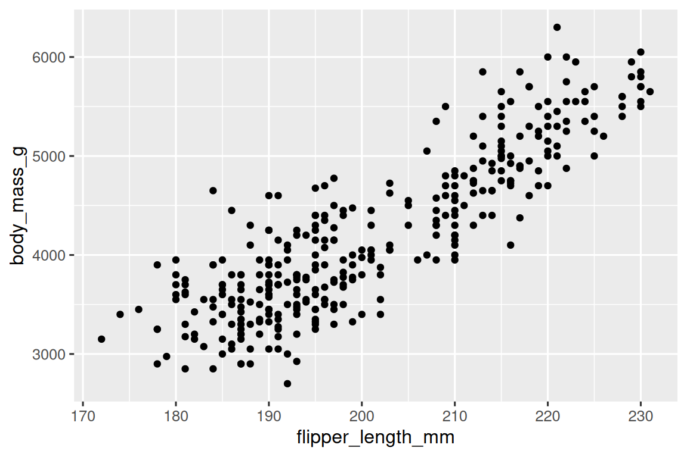
Ahora tenemos algo que se parece a lo que podríamos considerar como un “diagrama de dispersión”. Todavía no coincide con nuestra gráfica de “objetivo final”, pero usando esta gráfica podemos comenzar a responder la pregunta que motivó nuestra exploración: “¿Cómo es la relación entre la longitud de las aletas y la masa corporal?” La relación parece ser positiva (a medida que aumenta la longitud de la aleta, también lo hace la masa corporal), bastante lineal (los puntos se agrupan alrededor de una línea en lugar de una curva) y moderadamente fuerte (no hay demasiada dispersión alrededor de esa línea). Los pingüinos con aletas más largas son generalmente más grandes en términos de masa corporal.
Antes de agregar más capas a este gráfico, hagamos una pausa por un momento y revisemos el mensaje de advertencia que recibimos:
Removed 2 rows containing missing values (
geom_point()).
Estamos viendo este mensaje porque hay dos pingüinos en nuestro conjunto de datos a los que les faltan valores de masa corporal y/o longitud de aleta y ggplot2 no tiene forma de representarlos en el gráfico sin estos dos valores. Al igual que R, ggplot2 se suscribe a la filosofía de que los valores faltantes nunca deben desaparecer en silencio. Este tipo de advertencia es probablemente uno de los tipos de advertencia más comunes que verá cuando trabaje con datos reales: los valores faltantes son un problema muy común y aprenderá más sobre ellos a lo largo del libro, particularmente en Capítulo 18. Para las gráficas restantes en este capítulo, suprimiremos esta advertencia para que no se imprima junto con cada gráfica que hagamos
1.2.4 Agregar estética y capas
Los diagramas de dispersión son útiles para mostrar la relación entre dos variables numéricas, pero siempre es una buena idea ser escéptico ante cualquier relación aparente entre dos variables y preguntar si puede haber otras variables que expliquen o cambien la naturaleza de esta relación aparente. Por ejemplo, ¿la relación entre la longitud de las aletas y la masa corporal difiere según la especie? Incorporemos las especies a nuestra gráfica y veamos si esto revela alguna información adicional sobre la aparente relación entre estas variables. Haremos esto representando especies con puntos de diferentes colores.
Para conseguirlo, ¿tendremos que modificar la estética o la geom? Si adivinaste “en el mapeo estético, dentro de aes()”, ¡ya estás aprendiendo a crear visualizaciones de datos con ggplot2! Y si no, no te preocupes. A lo largo del libro, hará muchos más ggplots y tendrá muchas más oportunidades para verificar su intuición a medida que los hace.
ggplot(
data = penguins,
mapping = aes(x = flipper_length_mm, y = body_mass_g, color = species)
) +
geom_point()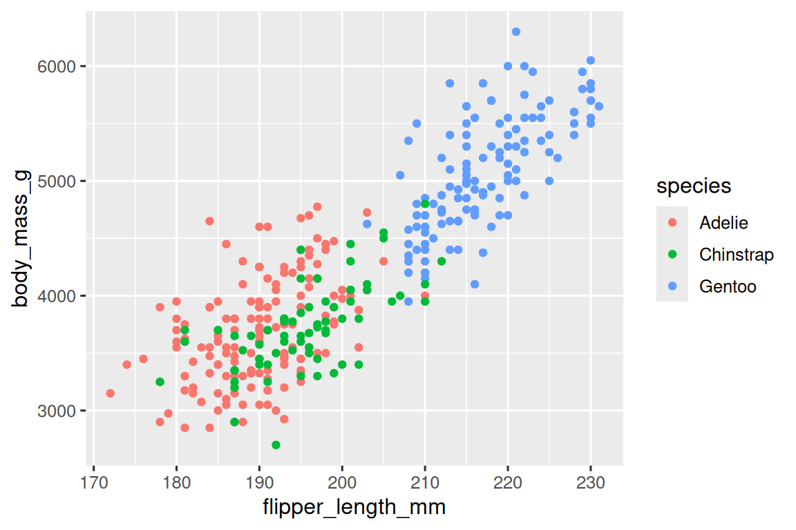
Cuando una variable categórica se asigna a una estética, ggplot2 asignará automáticamente un valor único de la estética (aquí, un color único) a cada nivel único de la variable (cada una de las tres especies), un proceso conocido como escalado . ggplot2 también agregará una leyenda que explica qué valores corresponden a qué niveles.
Ahora agreguemos una capa más: una curva suave que muestre la relación entre la masa corporal y la longitud de la aleta. Antes de continuar, consulte el código anterior y piense en cómo podemos agregar esto a nuestra gráfica existente.
Dado que este es un nuevo objeto geométrico que representa nuestros datos, agregaremos un nuevo geom como una capa encima de nuestro punto geom: geom_smooth(). Y especificaremos que queremos dibujar la línea de mejor ajuste en base a un modelo lineal con method = "lm".
ggplot(
data = penguins,
mapping = aes(x = flipper_length_mm, y = body_mass_g, color = species)
) +
geom_point() +
geom_smooth(method = "lm")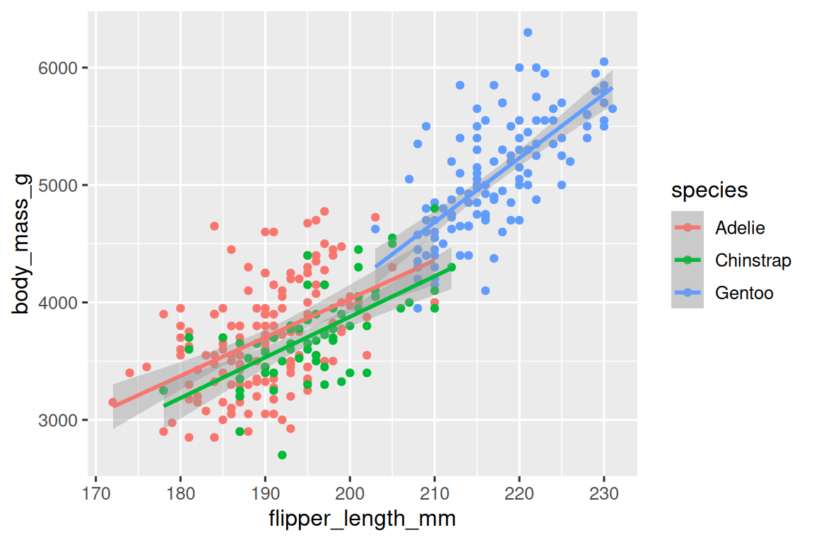
Agregamos líneas con éxito, pero este gráfico no se parece al gráfico de Sección 1.2.2, que solo tiene una línea para todo el conjunto de datos en lugar de líneas separadas para cada una de las especies de pingüinos.
Cuando las asignaciones estéticas se definen en ggplot(), en el nivel global, se transmiten a cada una de las capas de geom subsiguientes de la trama. Sin embargo, cada función geom en ggplot2 también puede tomar un argumento mapping, que permite mapeos estéticos en el nivel local que se agregan a los heredados del nivel global. Dado que queremos que los puntos se coloreen en función de las especies, pero no queremos que las líneas se separen para ellos, debemos especificar color = species solo para geom_point().
ggplot(
data = penguins,
mapping = aes(x = flipper_length_mm, y = body_mass_g)
) +
geom_point(mapping = aes(color = species)) +
geom_smooth(method = "lm")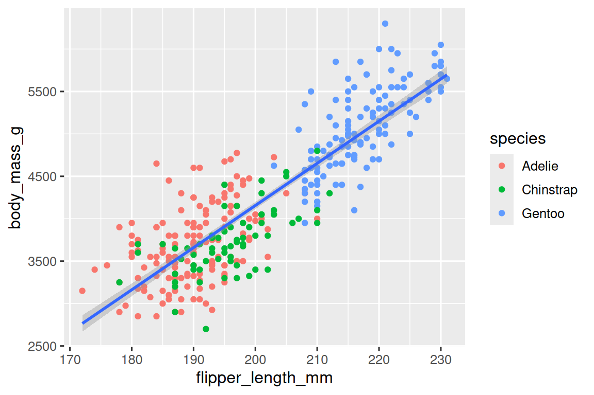
¡Voila! Tenemos algo que se parece mucho a nuestro objetivo final, aunque todavía no es perfecto. Todavía necesitamos usar diferentes formas para cada especie de pingüinos y mejorar las etiquetas.
Por lo general, no es una buena idea representar información usando solo colores en un gráfico, ya que las personas perciben los colores de manera diferente debido a la ceguera al color u otras diferencias en la visión del color. Por lo tanto, además del color, también podemos asignar species a la aesthetic de shape(forma).
ggplot(
data = penguins,
mapping = aes(x = flipper_length_mm, y = body_mass_g)
) +
geom_point(mapping = aes(color = species, shape = species)) +
geom_smooth(method = "lm")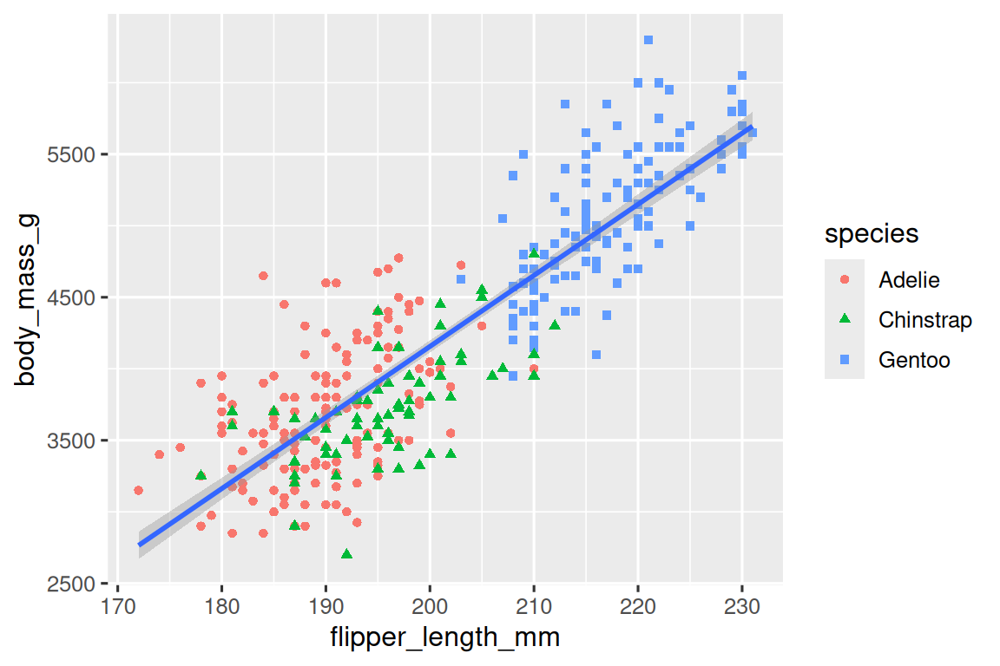
Tenga en cuenta que la leyenda se actualiza automáticamente para reflejar también las diferentes formas de los puntos.
Y finalmente, podemos mejorar las etiquetas de nuestro gráfico usando la función labs() en una nueva capa. Algunos de los argumentos de labs() pueden explicarse por sí mismos: title agrega un título y subtitle agrega un subtítulo a la gráfica. Otros argumentos coinciden con las asignaciones aesthetics, x es la etiqueta del eje x, y es la etiqueta del eje y, y color y shape definen la etiqueta de la leyenda. Además, podemos mejorar la paleta de colores para que sea segura para los daltónicos con la función scale_color_colorblind() del paquete ggthemes.
ggplot(
data = penguins,
mapping = aes(x = flipper_length_mm, y = body_mass_g)
) +
geom_point(aes(color = species, shape = species)) +
geom_smooth(method = "lm") +
labs(
title = "Masa corporal y longitud de las aletas",
subtitle = "Dimensiones para pingüinos Adelia, barbijo y papúa",
x = "Longitud de la aleta (mm)", y = "Masa corporal (g)",
color = "Especies", shape = "Especies"
) +
scale_color_colorblind()![Un diagrama de dispersión de la masa corporal frente a la longitud de la aleta de los pingüinos, con una línea de mejor ajuste que muestra la relación entre estas dos variables superpuesta. La gráfica muestra una positiva, bastante lineal, y relativamente fuerte relación entre estas dos variables. Especies (Adelia, Chinstrap y Gentoo) se representan con diferentes colores y formas. La relación entre la masa corporal y la longitud de la aleta es aproximadamente lo mismo para estas tres especies, y los pingüinos papúa son más grande que los pingüinos de las otras dos especies.](data-visualize_files/figure-html/unnamed-chunk-15-1.png)
¡Finalmente tenemos una gráfica que encaja perfectamente con nuestro “objetivo final”!
1.2.5 Ejercicios
¿Cuántas filas hay en
penguins? ¿Cuántas columnas?¿Qué describe la variable
bill_ depth_mmen el data framepenguins? Lea la ayuda con?penguinspara averiguarlo.Haz un diagrama de dispersión de
bill_depth_mmfrente abill_length_mm. Describe la relación entre estas dos variables.¿Qué pasa si haces un diagrama de dispersión de
speciesfrente abill_depth_mm? Es decir, haz un diagrama de dispersión conbill_depth_mmen el eje y ybill_length_mmen el eje x. ¿Cuál podría ser una mejor elección de geom?-
¿Por qué lo siguiente da un error y cómo lo solucionaría?
ggplot(data = penguins) + geom_point() ¿Qué hace el argumento
na.rmengeom_point()? ¿Cuál es el valor predeterminado del argumento? Cree un diagrama de dispersión en el que utilice con éxito este argumento con valorTRUE.Agregue el siguiente título al gráfico que hizo en el ejercicio anterior: “Los datos provienen del paquete palmerpenguins”. Sugerencia: Eche un vistazo a la documentación de
labs().-
Vuelva a crear la siguiente visualización. ¿A qué aesthetic se debe asignar
bill_depth_mm? ¿Y debería mapearse a nivel global o a nivel de geom?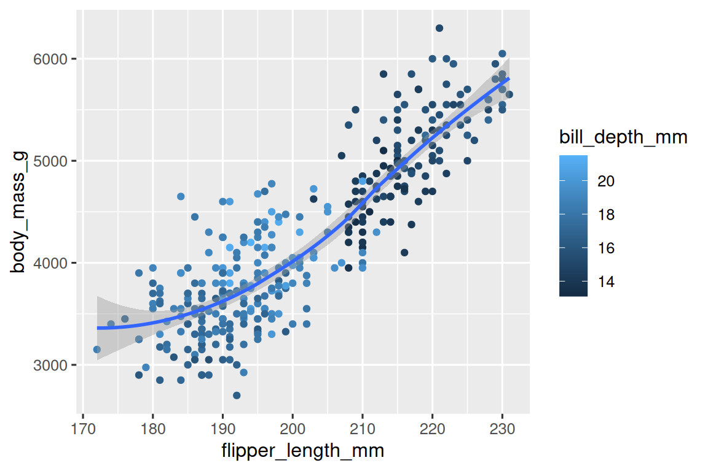
-
Ejecute este código en su cabeza y prediga cómo se verá la salida. Luego, ejecuta el código en R y verifica tus predicciones.
ggplot( data = penguins, mapping = aes(x = flipper_length_mm, y = body_mass_g, color = island) ) + geom_point() + geom_smooth(se = FALSE) -
¿Se verán diferentes estos dos gráficos? ¿Por qué/ por qué no?
ggplot( data = penguins, mapping = aes(x = flipper_length_mm, y = body_mass_g) ) + geom_point() + geom_smooth() ggplot() + geom_point( data = penguins, mapping = aes(x = flipper_length_mm, y = body_mass_g) ) + geom_smooth( data = penguins, mapping = aes(x = flipper_length_mm, y = body_mass_g) )
1.3 Llamadas ggplot2
A medida que avancemos desde estas secciones introductorias, pasaremos a una expresión más concisa del código ggplot2. Hasta ahora hemos sido muy explícitos, lo cual es útil cuando estás aprendiendo:
ggplot(
data = penguins,
mapping = aes(x = flipper_length_mm, y = body_mass_g)
) +
geom_point()Por lo general, los primeros uno o dos argumentos de una función son tan importantes que debe saberlos de memoria. Los dos primeros argumentos de ggplot() son data y mapping; en el resto del libro, no proporcionaremos esos nombres. Eso ahorra escribir y, al reducir la cantidad de texto adicional, hace que sea más fácil ver las diferencias entre los gráficos. Esa es una preocupación de programación realmente importante a la que volveremos en Capítulo 25.
Reescribiendo la gráfica anterior de forma más concisa se obtiene:
ggplot(penguins, aes(x = flipper_length_mm, y = body_mass_g)) +
geom_point()En el futuro, también aprenderá sobre pipe, |>, que le permitirá crear esa gráfica con:
penguins |>
ggplot(aes(x = flipper_length_mm, y = body_mass_g)) +
geom_point()1.4 Visualización de distribuciones
Cómo visualiza la distribución de una variable depende del tipo de variable: categórica o numérica.
1.4.1 Una variable categórica
Una variable es categórica si solo puede tomar uno de un pequeño conjunto de valores. Para examinar la distribución de una variable categórica, puede utilizar un gráfico de barras. La altura de las barras muestra cuántas observaciones ocurrieron con cada valor x.
En gráficos de barras de variables categóricas con niveles no ordenados, como la “especies” de pingüinos anterior, a menudo es preferible reordenar las barras en función de sus frecuencias. Hacerlo requiere transformar la variable en un factor (cómo R maneja los datos categóricos) y luego reordenar los niveles de ese factor.
ggplot(penguins, aes(x = fct_infreq(species))) +
geom_bar()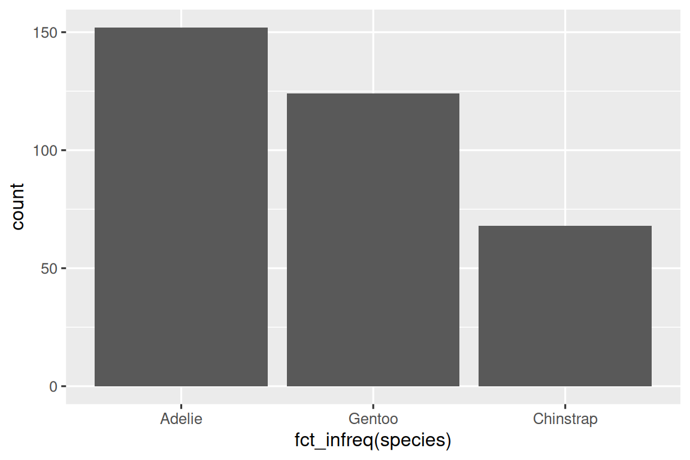
Aprenderá más sobre factores y funciones para manejar factores (como fct_infreq() que se muestra arriba) en Capítulo 16.
1.4.2 Una variable numérica
Una variable es numérica (o cuantitativa) si puede tomar una amplia gama de valores numéricos, y es sensato sumar, restar o tomar promedios con esos valores. Las variables numéricas pueden ser continuas o discretas.
Una visualización de uso común para distribuciones de variables continuas es un histograma.
ggplot(penguins, aes(x = body_mass_g)) +
geom_histogram(binwidth = 200)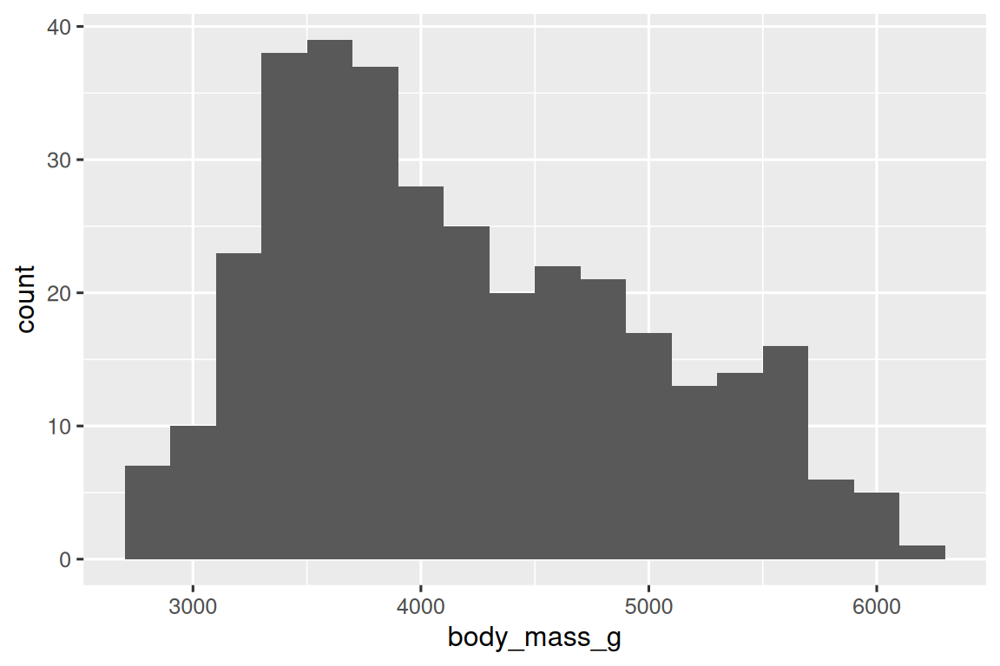
Un histograma divide el eje x en contenedores igualmente espaciados y luego usa la altura de una barra para mostrar el número de observaciones que caen en cada contenedor. En el gráfico anterior, la barra más alta muestra que 39 observaciones tienen un valor de body_mass_g entre 3500 y 3700 gramos, que son los bordes izquierdo y derecho de la barra.
Puede establecer el ancho de los intervalos en un histograma con el argumento binwidth (ancho de barra), que se mide en las unidades de la variable x. Siempre debe explorar una variedad de anchos de bin cuando trabaje con histogramas, ya que diferentes anchos de bin pueden revelar patrones diferentes. En las gráficas a continuación, un ancho de bin de 20 es demasiado estrecho, lo que da como resultado demasiadas barras, lo que dificulta determinar la forma de la distribución. Del mismo modo, un ancho de intervalo de 2000 es demasiado alto, lo que da como resultado que todos los datos se agrupan en solo tres barras y también dificulta determinar la forma de la distribución. Un binwidth de 200 proporciona un equilibrio razonable.
ggplot(penguins, aes(x = body_mass_g)) +
geom_histogram(binwidth = 20)
ggplot(penguins, aes(x = body_mass_g)) +
geom_histogram(binwidth = 2000)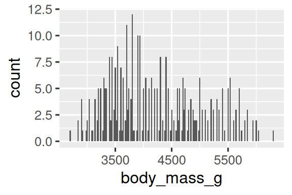
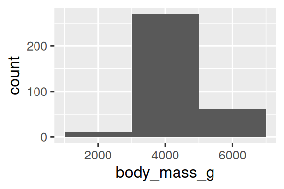
Una visualización alternativa para distribuciones de variables numéricas es una gráfica de densidad. Un gráfico de densidad es una versión suavizada de un histograma y una alternativa práctica, particularmente para datos continuos que provienen de una distribución suave subyacente. No entraremos en cómo geom_density() estima la densidad (puede leer más sobre eso en la documentación de la función), pero expliquemos cómo se dibuja la curva de densidad con una analogía. Imagina un histograma hecho de bloques de madera. Luego, imagina que le tiras encima un hilo de espagueti cocido. La forma que tomarán los espaguetis sobre los bloques se puede considerar como la forma de la curva de densidad. Muestra menos detalles que un histograma, pero puede facilitar la obtención rápida de la forma de la distribución, en particular con respecto a las modas y la asimetría.
ggplot(penguins, aes(x = body_mass_g)) +
geom_density()
#> Warning: Removed 2 rows containing non-finite outside the scale range
#> (`stat_density()`).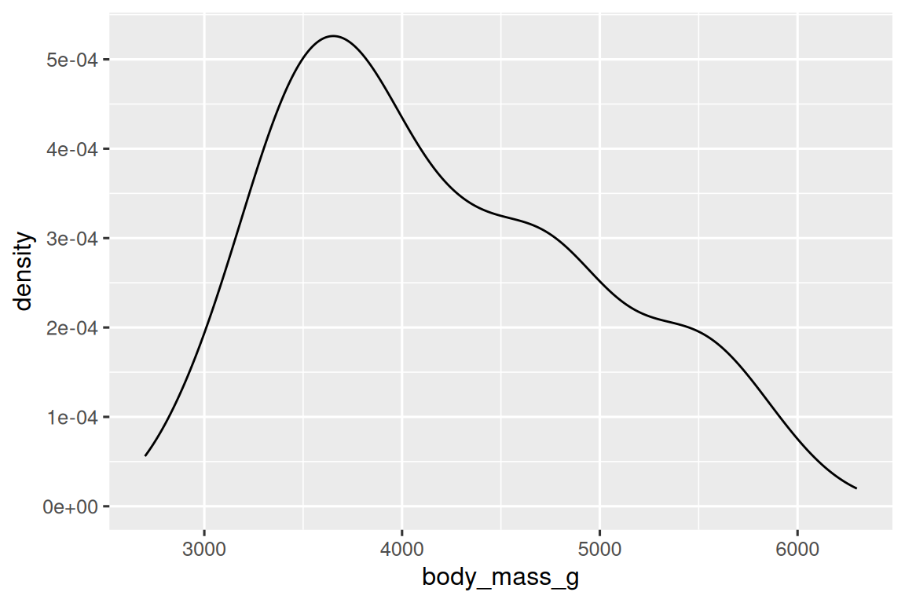
1.4.3 Ejercicios
Haz un gráfico de barras de
speciesdepenguins, donde asignasspeciesa la aestheticy. ¿En qué se diferencia esta gráfica?-
¿En qué se diferencian las siguientes dos gráficas? ¿Qué aesthetic,
colorofill, es más útil para cambiar el color de las barras? ¿Qué hace el argumento
binsengeom_histogram()?Haz un histograma de la variable
caraten el conjunto de datosdiamondsque está disponible cuando carga el paquete tidyverse. Experimente con diferentes binwidths. ¿Qué binwidth revela los patrones más interesantes?
1.5 Visualizando relaciones
Para visualizar una relación, necesitamos tener al menos dos variables asignadas a la aesthetic de una gráfica. En las siguientes secciones, aprenderá acerca de las gráficas comúnmente utilizadas para visualizar las relaciones entre dos o más variables y las geoms utilizados para crearlas.
1.5.1 Una variable numérica y categórica
Para visualizar la relación entre una variable numérica y categórica, podemos usar diagramas de caja uno al lado del otro. Un diagrama de caja es un tipo de abreviatura visual para las medidas de posición (percentiles) que describen una distribución. También es útil para identificar posibles valores atípicos. Como se muestra en Figura 1.1, cada diagrama de caja consta de:
Un caja que indica el rango de la mitad central de los datos, una distancia conocida como rango intercuartil (RIC), que se extiende desde el percentil 25 de la distribución hasta el percentil 75. En el medio del cuadro hay una línea que muestra la mediana, es decir, el percentil 50, de la distribución. Estas tres líneas le dan una idea de la dispersión de la distribución y si la distribución es o no simétrica con respecto a la mediana o sesgada hacia un lado.
Puntos visuales que muestran observaciones que caen más de 1,5 veces el IQR desde cualquier borde del cuadro. Estos puntos periféricos son inusuales, por lo que se grafican individualmente.
Una línea (o bigote) que se extiende desde cada extremo de la caja y va hasta el punto no atípico más alejado de la distribución.

Echemos un vistazo a la distribución de la masa corporal por especie usando geom_boxplot():
ggplot(penguins, aes(x = species, y = body_mass_g)) +
geom_boxplot()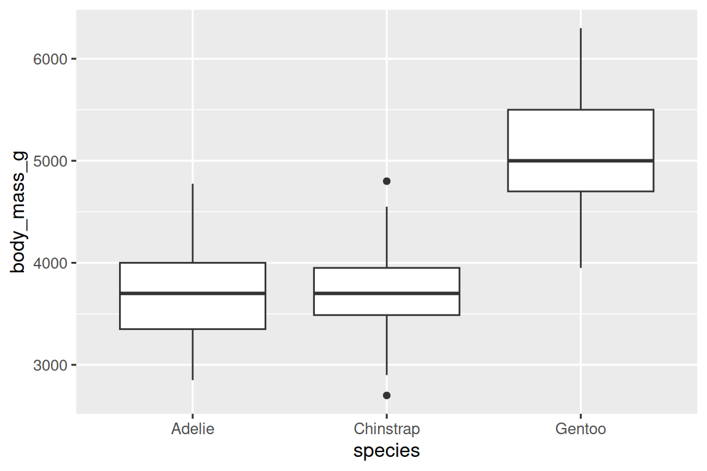
Alternativamente, podemos hacer gráficas de densidad con geom_density().
ggplot(penguins, aes(x = body_mass_g, color = species)) +
geom_density(linewidth = 0.75)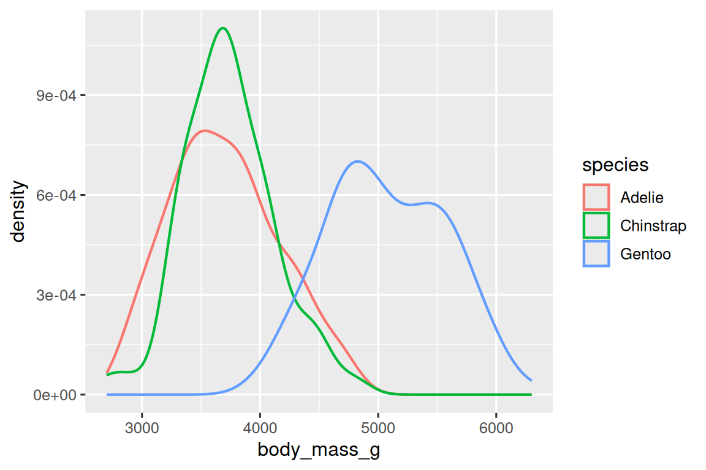
También hemos personalizado el grosor de las líneas usando el argumento linewidth para que se destaquen un poco más contra el fondo.
Adicionalmente, podemos asignar species a la estética de color y fill y usar la estética alpha para agregar transparencia a las curvas de densidad rellenas. Esta aesthetic toma valores entre 0 (totalmente transparente) y 1 (totalmente opaco). En la siguiente gráfica está establecido en 0.5.
ggplot(penguins, aes(x = body_mass_g, color = species, fill = species)) +
geom_density(alpha = 0.5)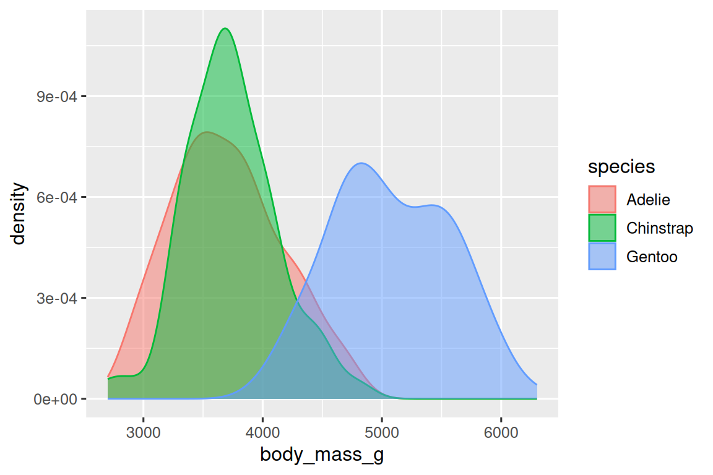
Tenga en cuenta la terminología que hemos utilizado aquí:
- Asignamos variables a la aesthetic si queremos que el atributo visual representado por esa aesthetic varíe según los valores de esa variable.
- De lo contrario, establecemos el valor de una aesthetic.
1.5.2 Dos variables categóricas
Podemos usar diagramas de barras apiladas para visualizar la relación entre dos variables categóricas. Por ejemplo, los siguientes dos diagramas de barras apiladas muestran la relación entre “isla” y “especies”, o específicamente, visualizan la distribución de “especies” dentro de cada isla.
El primer gráfico muestra las frecuencias de cada especie de pingüinos en cada isla. El gráfico de frecuencias muestra que hay un número igual de Adelia en cada isla. Pero no tenemos una buena idea del equilibrio porcentual dentro de cada isla.
El segundo gráfico es un gráfico de frecuencia relativa, creado al configurar position = "fill" en la geom, es más útil para comparar las distribuciones de especies en las islas, ya que no se ve afectado por el número desigual de pingüinos en las islas. Usando este gráfico, podemos ver que todos los pingüinos Gentoo viven en la isla Biscoe y constituyen aproximadamente el 75% de los pingüinos en esa isla, Chinstrap todos viven en la isla Dream y constituyen aproximadamente el 50% de los pingüinos en esa isla, y Adelie vive en las tres islas y componen todos los pingüinos en Torgersen.
Al crear estos gráficos de barras, asignamos la variable que se separará en barras a la estética x y la variable que cambiará los colores dentro de las barras a la estética fill.
1.5.3 Dos variables numéricas
Hasta ahora has aprendido acerca de diagramas de dispersión (creados con geom_point()) y curvas suaves (creadas con geom_smooth()) para visualizar la relación entre dos variables numéricas. Una gráfica de dispersión es probablemente la gráfica más utilizada para visualizar la relación entre dos variables numéricas.
ggplot(penguins, aes(x = flipper_length_mm, y = body_mass_g)) +
geom_point()1.5.4 Tres o más variables
Como vimos en Sección 1.2.4, podemos incorporar más variables en una trama asignándolas a una estética adicional. Por ejemplo, en el siguiente diagrama de dispersión, los colores de los puntos representan especies y las formas de los puntos representan islas.
ggplot(penguins, aes(x = flipper_length_mm, y = body_mass_g)) +
geom_point(aes(color = species, shape = island))
Sin embargo, agregar demasiadas asignaciones aesthetics a una gráfica hace que sea desordenada y difícil de entender. Otra forma, que es particularmente útil para las variables categóricas, es dividir su gráfico en facetas, subgráficos que muestran un subconjunto de los datos.
Para facetar su gráfica por una sola variable, use facet_wrap(). El primer argumento de facet_wrap() es una fórmula3, que se crea con ~ seguido de un nombre de variable. La variable que pasa a facet_wrap() debe ser categórica.
ggplot(penguins, aes(x = flipper_length_mm, y = body_mass_g)) +
geom_point(aes(color = species, shape = species)) +
facet_wrap(~island)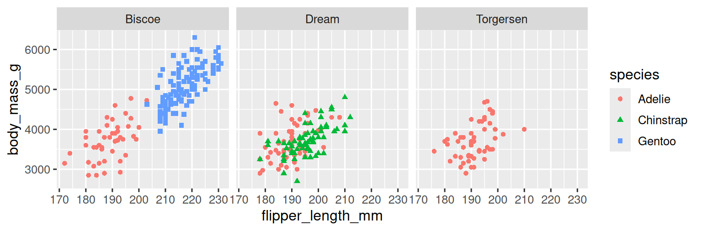
Aprenderá sobre muchas otros geoms para visualizar distribuciones de variables y relaciones entre ellas en Capítulo 9.
1.5.5 Ejercicios
El marco de datos
mpgque se incluye con el paquete ggplot2 contiene observaciones 234 recopiladas por la Agencia de Protección Ambiental de los EE. ¿Qué variables enmpgson categóricas? ¿Qué variables son númericas? (Sugerencia: escriba?mpgpara leer la documentación del conjunto de datos). ¿Cómo puedes ver esta información cuando ejecutasmpg?Haz un diagrama de dispersión de
hwyvs.displusando el data framempg. A continuación, asigne una tercera variable numérica acolor, luego asize, luego acolorysize, luego ashape. ¿Cómo se comportan estas aesthetics de manera diferente para las variables categóricas frente a las numéricas?En el diagrama de dispersión de
hwyvs.displ, ¿qué sucede si mapeas una tercera variable alinewidth?¿Qué sucede si mapeas la misma variable a múltiples aesthetics?
Haz un diagrama de dispersión de
bill_depth_mmvs.bill_length_mmy colorea los puntos porspecies. ¿Qué revela la adición de colores por especie sobre la relación entre estas dos variables? ¿Qué pasa con el facetado porspecies?-
¿Por qué lo siguiente produce dos leyendas separadas? ¿Cómo lo arreglarías para combinar las dos leyendas?
ggplot( data = penguins, mapping = aes( x = bill_length_mm, y = bill_depth_mm, color = species, shape = species ) ) + geom_point() + labs(color = "Especies") -
Cree los dos siguientes diagramas de barras apiladas. ¿Qué pregunta puedes responder con la primera? ¿Qué pregunta puedes responder con la segunda?
1.6 Guardando tus gráficas
Una vez que haya creado un gráfico, es posible que desee sacarlo de R guardándolo como una imagen que puede usar en otro lugar. Ese es el trabajo de ggsave(), que guardará el gráfico creado más reciente en el disco:
ggplot(penguins, aes(x = flipper_length_mm, y = body_mass_g)) +
geom_point()
ggsave(filename = "penguin-plot.png")Esto guardará su gráfica en su directorio de trabajo, un concepto sobre el que aprenderá más en Capítulo 6.
Si no especifica el ancho (argumento width) y la altura (argumento height) se tomarán de las dimensiones del dispositivo del gráfico actual. Para código reproducible, querrá especificarlos. Puede aprender más sobre ggsave() en la documentación.
En general, sin embargo, recomendamos que armes tus informes finales utilizando Quarto, un sistema de creación reproducible que te permite intercalar tu código y tu prosa e incluir automáticamente tus gráficas en tus redacciones. Aprenderá más sobre Quarto en Capítulo 28.
1.6.1 Ejercicios
-
Ejecute las siguientes líneas de código. ¿Cuál de los dos gráficos se guarda como
mpg-grafica.png? ¿Por qué? ¿Qué necesita cambiar en el código anterior para guardar el gráfico como PDF en lugar de PNG? ¿Cómo podría averiguar qué tipos de archivos de imagen funcionarían en
ggsave()?
1.7 Problemas comunes
A medida que comience a ejecutar el código de R, es probable que tenga problemas. No te preocupes — le pasa a todo el mundo. Todos hemos estado escribiendo código R durante años, ¡pero todos los días seguimos escribiendo código que no funciona en el primer intento!
Comience comparando cuidadosamente el código que está ejecutando con el código del libro. R es extremadamente quisquilloso, y un carácter fuera de lugar puede marcar la diferencia. Asegúrate de que cada ( coincida con un ) y cada " esté emparejado con otro ". A veces, ejecutará el código y no sucederá nada. Verifique la parte izquierda de su consola: si es un +, significa que R no cree que haya escrito una expresión completa y está esperando que la termine. En este caso, por lo general es fácil volver a empezar desde cero presionando ESCAPE para cancelar el procesamiento del comando actual.
Un problema común al crear gráficos ggplot2 es colocar el + en el lugar equivocado: tiene que estar al final de la línea, no al principio. En otras palabras, asegúrese de no haber escrito accidentalmente un código como este:
ggplot(data = mpg)
+ geom_point(mapping = aes(x = displ, y = hwy))Si todavía estás atascado, prueba la ayuda. Puede obtener ayuda sobre cualquier función de R ejecutando ?function_name en la consola, o resaltando el nombre de la función y presionando F1 en RStudio. No se preocupe si la ayuda no parece tan útil; en su lugar, salte a los ejemplos y busque el código que coincida con lo que está tratando de hacer.
Si eso no ayuda, lea atentamente el mensaje de error. ¡A veces la respuesta estará enterrada allí! Pero cuando eres nuevo en R, incluso si la respuesta está en el mensaje de error, es posible que aún no sepas cómo entenderlo. Otra gran herramienta es Google: intente buscar en Google el mensaje de error, ya que es probable que alguien más haya tenido el mismo problema y haya obtenido ayuda en línea.
1.8 Resumen
En este capítulo, ha aprendido los conceptos básicos de la visualización de datos con ggplot2. Comenzamos con la idea básica que sustenta ggplot2: una visualización es un mapeo de variables en sus datos a propiedades estéticas como posición, color, tamaño y forma. Luego aprendió a aumentar la complejidad y mejorar la presentación de sus gráficos capa por capa. También aprendió sobre las gráficas de uso común para visualizar la distribución de una sola variable, así como para visualizar las relaciones entre dos o más variables, aprovechando mapeos estéticos adicionales y/o dividiendo su gráfica en pequeños múltiplos usando facetas.
Usaremos visualizaciones una y otra vez a lo largo de este libro, presentaremos nuevas técnicas a medida que las necesitemos y profundizaremos en la creación de visualizaciones con ggplot2 en Capítulo 9 a través de Capítulo 11.
Con los conceptos básicos de visualización en su haber, en el próximo capítulo vamos a cambiar un poco de tema y le daremos algunos consejos prácticos sobre el flujo de trabajo. Intercalamos consejos de flujo de trabajo con herramientas de ciencia de datos a lo largo de esta parte del libro porque lo ayudará a mantenerse organizado a medida que escribe cantidades crecientes de código de R.
Puede eliminar ese mensaje y forzar la resolución de conflictos a pedido utilizando el paquete en conflicto, que se vuelve más importante a medida que carga más paquetes. Puede obtener más información sobre conflictos en https://conflicted.r-lib.org.↩︎
Horst AM, Hill AP, Gorman KB (2020). palmerpenguins: Datos de pingüinos del Archipiélago Palmer (Antártida). version 0.1.0. del paquete de R https://allisonhorst.github.io/palmerpenguins/. doi: 10.5281/zenodo.3960218.↩︎
Aquí “formula” es el nombre de la cosa creada por
~, no un sinónimo de “ecuación”.↩︎